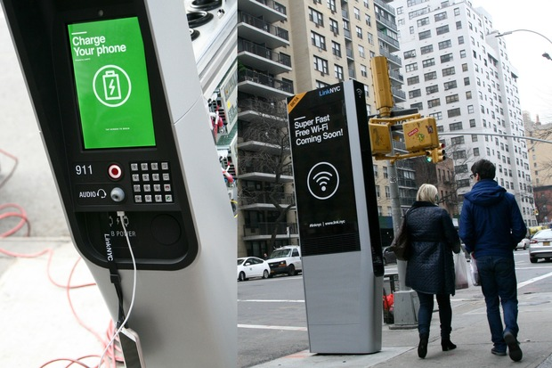

Locations with Free Internet, Charging Port and a Bench

When going outside with friends,
It is difficult to find places to sit and eat or get free WiFi
especially now with Covid where often times there is no dine in
and places are closed. I want to use data analysis and
visualization/maps to help users find bench locations in NYC
and Free WiFi hot-spots so users can find a bench, to rest,
to eat, to charge their phones and to have WiFi.
-----------------------------------------------------------
Overview
I wanted to show users where they can get access to free internet,
a charging outlet as well as a bench to sit down and rest.
I used knowledge from class about folium, python, data frame
manipulation, and SQL to get points on a map to show where
people can get rest while having access to the internet and
charging outlets. I learned about and used the haversine function
and I got the location points in
each borough where people can get free wifi and charging while also
having a place to sit down.
I used a bench information dataset and a wifi hotspot dataset to get the longitudes
and latitudes to find these points.
I made folium maps that have benches and hotspot points that are nearby
(about 150 feet, so the user can still access the internet) and showed the
user where these locations are.
-----------------------------------------------------------
Dataset information
NYC Wi-Fi Hotspot Locations
This dataset has information on various wifi hotspots throughout NYC. It has information about the hotspots providers, longitudes, latitudes, type of services(free, limited, etc.), and the data limits. For my use, I limited the data to provider "LinkNYC -CityBridge" Since this suited my needs as it provides the convenient option of charging. I also really liked NYC's idea of changing old unused phone booths to these wifi Kiosks. This Data set had all the longitudes and latitudes that I needed to find all the locations of these Kiosks and compare them to the benches locations.
City Bench Locations
This dataset has information on all the benches in NYC. It has information on the benches' longitudes, latitudes, types(backless, backend), and installation dates. I used this dataset to find benches that were near (150 feet) the Wifi Hotspots so that people using the hotspots won't need to awkwardly stand on the side of the road waiting for their phone to charge or to get wifi. Since this dataset provided me with the exact longitudes and latitudes I used it to find distances between hotspots and benches.
-----------------------------------------------------------
Techniques Used
I used the resources in NYC Open Data to filter the datasets by provider "LinkNYC -CityBridge" and by borough. I used Pandas to manipulate the CSV files and make them into data frames that I could use in my python function. To filter out the Longitude and Latitude and address I used data frame manipulation like rename(). I used the apply() method, lamda functions, loc[], idxmin(), and the haversine function to find the benches and hotspots that were nearest to each other and took the address of the nearest bench to the hotspot. I then left-merged my data frames using that common address. I then used the haversine function again to calculate the exact distance between benches and hotspots. I then filtered the distance to be less than 150 feet(0.04573 km) so that the user can still access the wifi. Lastly, I used Folium functions map and marker to create HTML maps based on the Longitudes and Latitudes of the points I filtered out.
-----------------------------------------------------------
Citations
Datasets
NYC Wi-Fi Hotspot Locations
City Bench Locations
Other resources used
To learn about the haversine function and folium and how to use it for dataframes.
Sklearn
Geeks for Geeks
Dizzy Coding
Folium
Medium
Wikipedia
To learn about Link NYC
Gigaom
Link NYC
For debugging and Extra Information
StackOverflow
Course Website